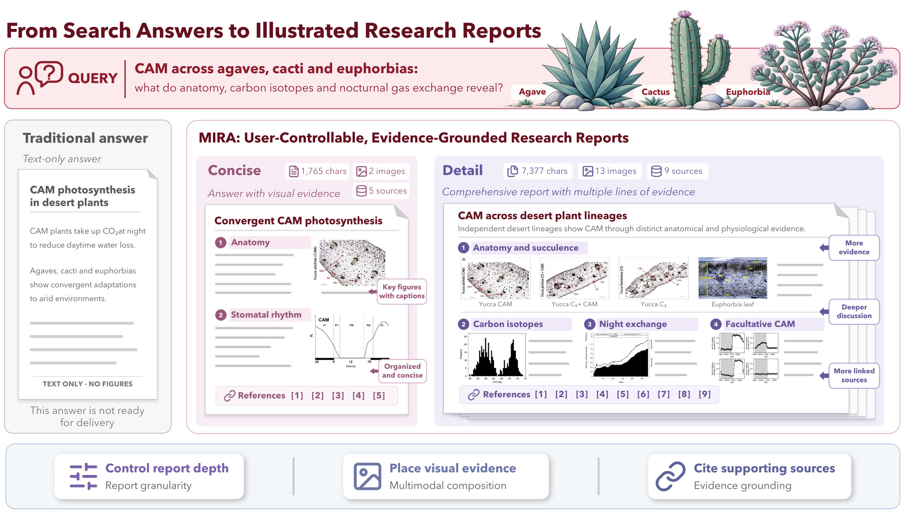
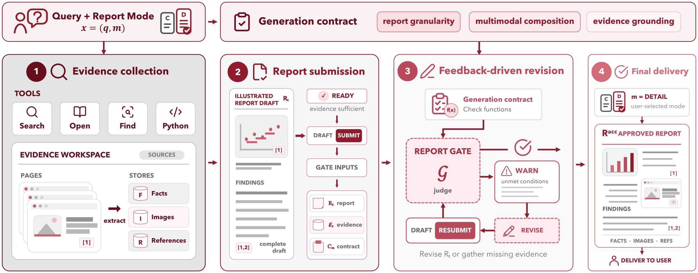
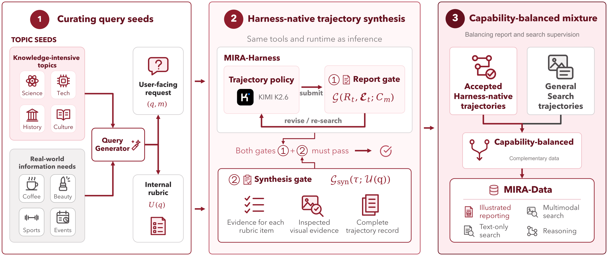
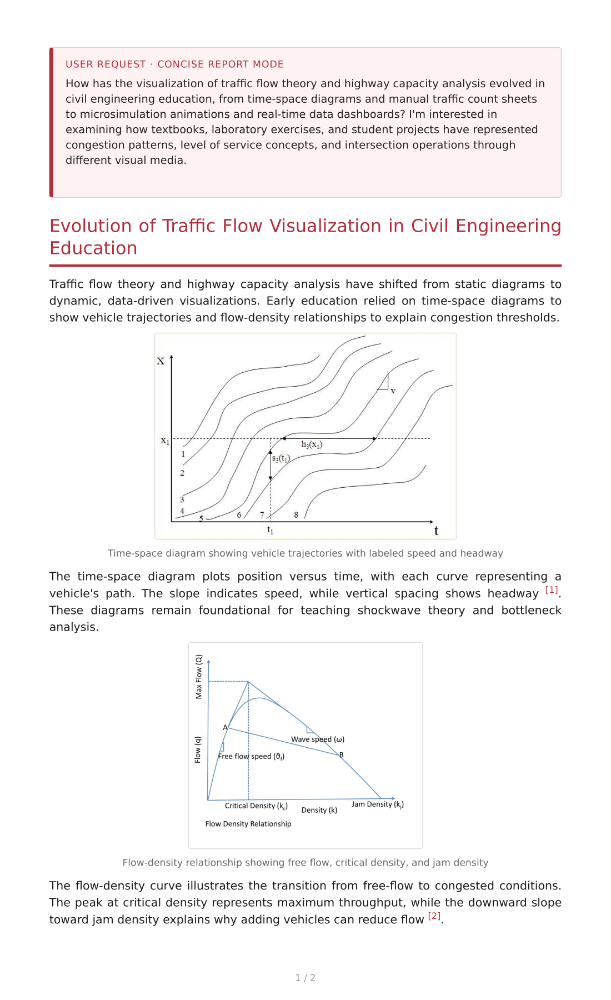
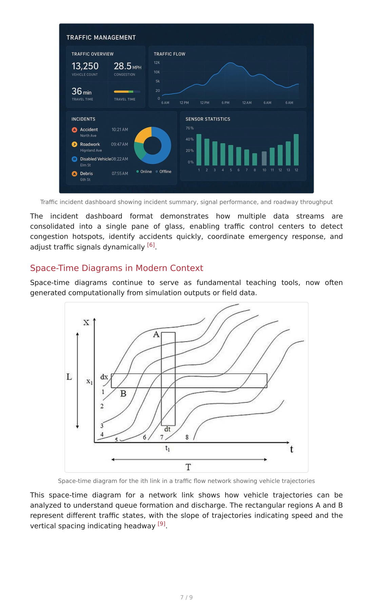

Overview
Deep research agents can search the open web, but they remain poorly suited to delivering what users often need: an illustrated report with the requested depth, images, and traceable sources. MIRA turns these requirements into generation contracts. MIRA-Harness gathers textual and visual evidence, checks each submitted draft against the contract, and revises until it is satisfied; MIRA-Data turns this workflow into training trajectories. Built on Qwen3.6-35B-A3B, MIRA-SFT is the strongest of the compared open agents on seven of eight benchmarks.
Highlights
- Controllable reports. Users set report depth, visual composition, and evidence grounding.
- Harness + data. Contracts drive research, writing, and revision; the same workflow produces training trajectories.
- Strong open agent. Best among compared open agents on 7 of 8 benchmarks.
From Search Answers to Illustrated Reports

MIRA-Harness

MIRA-Data

Main Results
| Model | Params | MMSearch | MMSearch-Plus | BrowseComp-VL | SimpleVQA | LiveVQA | FVQA | VDR-Bench | MMDeepResearch |
|---|---|---|---|---|---|---|---|---|---|
| Large-Scale Frontier Models | |||||||||
| Kimi-K3 | 2.8T (104B) | 89.26 | 60.00 | 60.32 | 83.33 | 91.23 | 82.46 | 22.86 | 54.32 |
| Qwen3.5 | 397B (17B) | 69.01 | 36.01 | 58.40 | 77.33 | 84.33 | 75.33 | 14.40 | 39.54 |
| DeepSeek-V4.1-Flash | 552B (8B/16B) | 88.33 | 59.91 | 72.86 | 81.33 | 88.67 | 85.00 | 32.20 | 51.23 |
| Lightweight Multimodal Search Agents | |||||||||
| OpenSearch-VL | 30B (3B) | 68.70 | 28.94 | 41.10 | 74.90 | 67.40 | 73.20 | 33.50 | 23.21 |
| REDSearcher-MM | 30B (3B) | 72.90 | 26.60 | 57.20 | – | 79.30 | – | – | – |
| Vision-DeepResearch | 30B (3B) | 69.60 | 28.50 | 53.70 | 66.33 | 77.60 | 74.20 | 37.80 | 12.78 |
| WeAgent-MMSearch | 30B (3B) | 77.78 | 37.82 | – | 77.73 | 81.05 | 79.33 | 35.68 | – |
| Qwen3.6 w/o Harness | 35B (3B) | 30.41 | 3.86 | 28.91 | 58.00 | 56.67 | 34.11 | 1.80 | 26.78 |
| Qwen3.6 w/ WeAgent Harness | 35B (3B) | 66.28 | 29.40 | – | 65.79 | 78.20 | 66.09 | 15.57 | – |
| Qwen3.6 w/ Vanilla Harness | 35B (3B) | 67.84 | 28.94 | 51.01 | 72.24 | 73.67 | 65.67 | 15.00 | 37.95 |
| Ours | |||||||||
| MIRA-Base | 35B (3B) | 73.10 | 33.44 | 56.64 | 74.33 | 78.33 | 70.00 | 19.00 | 41.90 |
| Δ (MIRA-Base − Vanilla) | +5.26 | +4.50 | +5.63 | +2.09 | +4.66 | +4.33 | +4.00 | +3.95 | |
| MIRA-SFT | 35B (3B) | 80.70 | 38.91 | 58.40 | 79.00 | 82.00 | 79.33 | 29.80 | 42.61 |
| Δ (MIRA-SFT − MIRA-Base) | +7.60 | +5.47 | +1.76 | +4.67 | +3.67 | +9.33 | +10.80 | +0.71 | |
Bold: best outside the large-scale frontier models. “–”: not reported.
Report Examples
One traffic-flow request in both report modes, one selected page each.


BibTeX
@article{mira2026,
title = {MIRA: A Multimodal Illustrated Deep Research Agent for Controllable Reports},
author = {Wu, Hongrui and Tuo, Kaiwen and Wang, Congcong and Li, Gen and Dong, Shuai and
Yu, Xinlei and Xu, Yuqi and Hou, Haowen and Peng, Zelin and Wang, Jiaqi},
year = {2026}
}